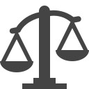

Раздел 6: Антикризисное управление
Готовимся к неожиданностям: устойчивость, быстрый ответ и разбор реальных кейсов для НКО.
6.1. НКО в Кризис: Опоры Устойчивости
Сообщество
Сильное ядро сторонников и волонтеров помогает быстро мобилизоваться, делиться ресурсами и поддерживать друг друга в трудные времена.
Коммуникации
Налаженные внутренние и внешние коммуникации позволяют быстро реагировать, информировать команду и партнеров, предотвращать панику.
Инфраструктура
Резервные каналы связи, бэкапы данных, защищённые облачные сервисы и альтернативные инструменты обеспечивают непрерывность работы.
Безопасность
Юридическая, информационная и психологическая безопасность — залог устойчивости. Важно заранее знать, куда обращаться и что делать.
6.2. Чек-лист "Тревожный чемоданчик НКО"
- Юридический: Контакты адвокатов, копии уставных документов (в облаке), шаблоны заявлений
- Информационный: Резервные каналы связи, бэкапы данных, план коммуникаций в кризис
- Финансовый: Резервный фонд, альтернативные способы получения/распределения средств
- Психологический: Контакты психологов, памятка по самопомощи
Кликните по пункту для отметки готовности. Двойной клик по своему пункту — удалить.
6.3. Шаблон "План реагирования на кризисную ситуацию"
6.4. Разбор реальных кейсов: Учимся на опыте
Выберите тип кризисной ситуации, чтобы ознакомиться с примером того, как НКО справлялись с подобными вызовами. Эти кейсы основаны на реальном опыте, но могут быть обобщены для иллюстрации.
Финансовая блокада
Потеря финансирования, блокировка счетов.

Юридическое давление
Проверки, обыски, судебные иски.
Цифровые атаки
DDoS, взломы, дискредитация онлайн.